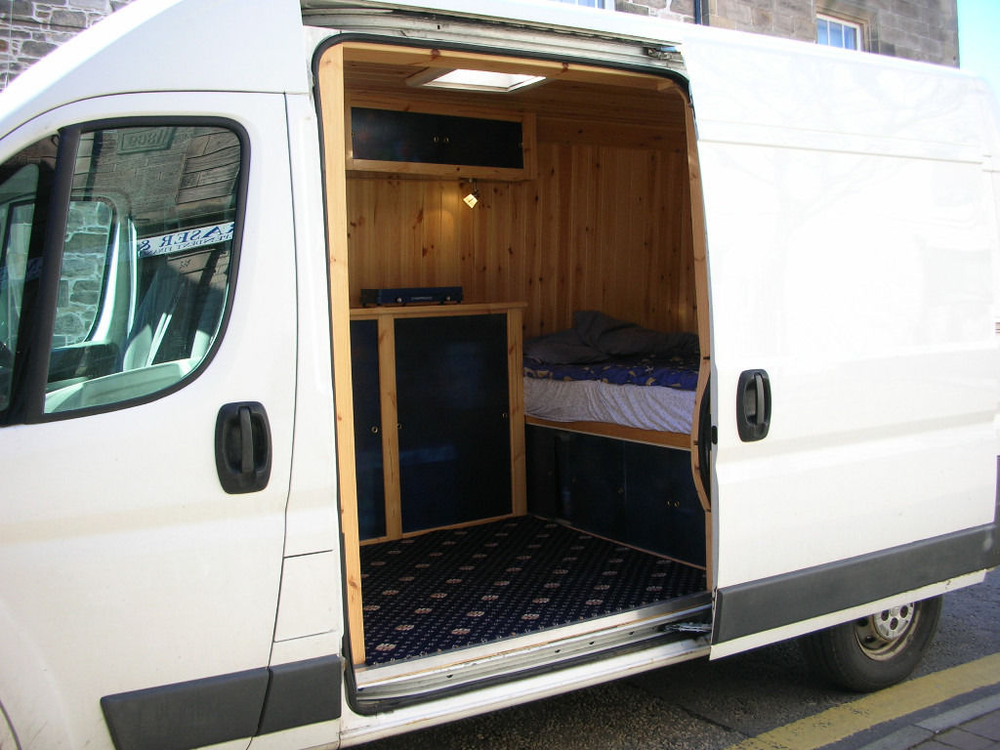
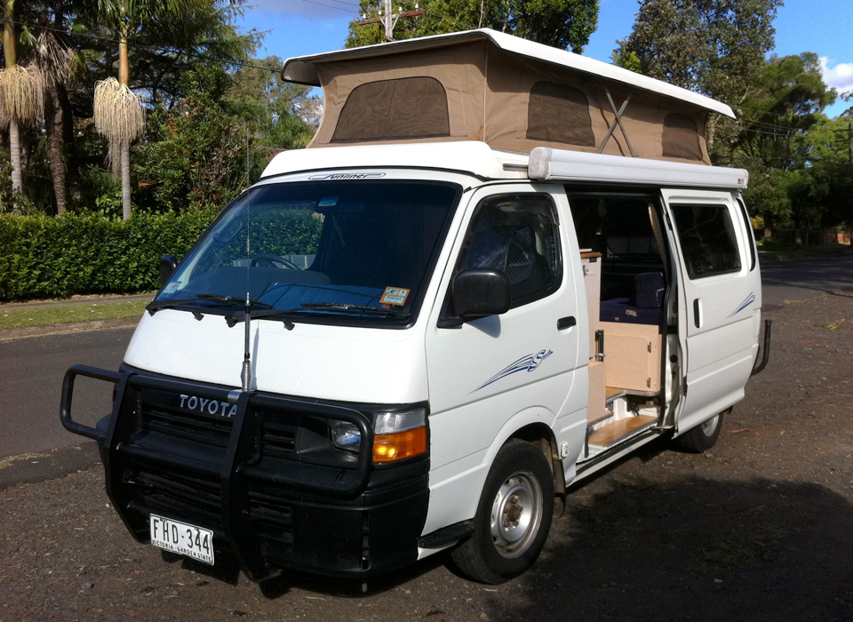
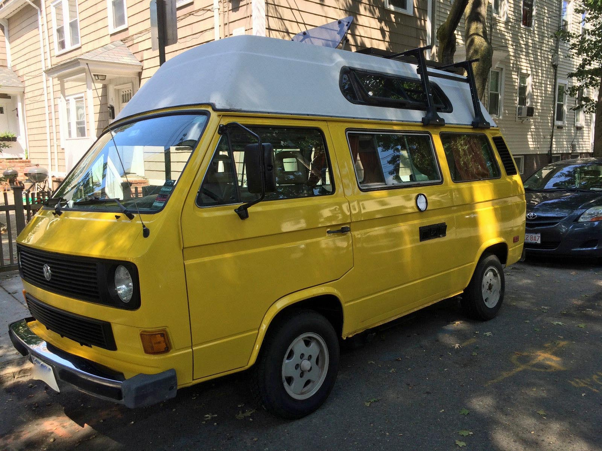
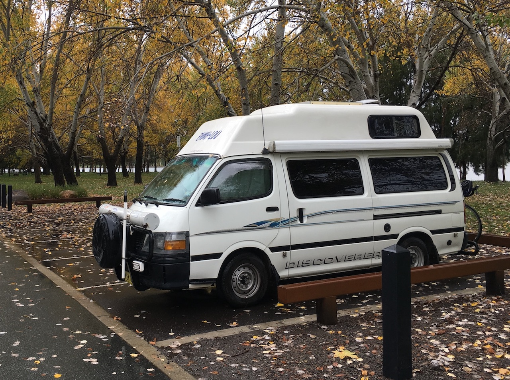
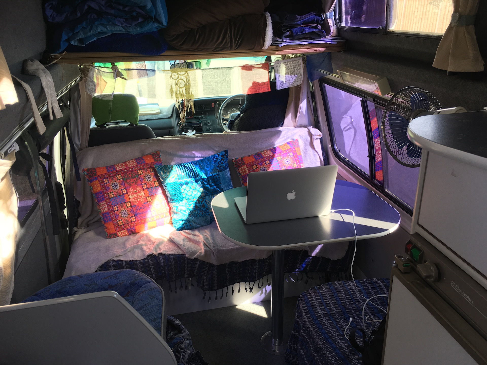
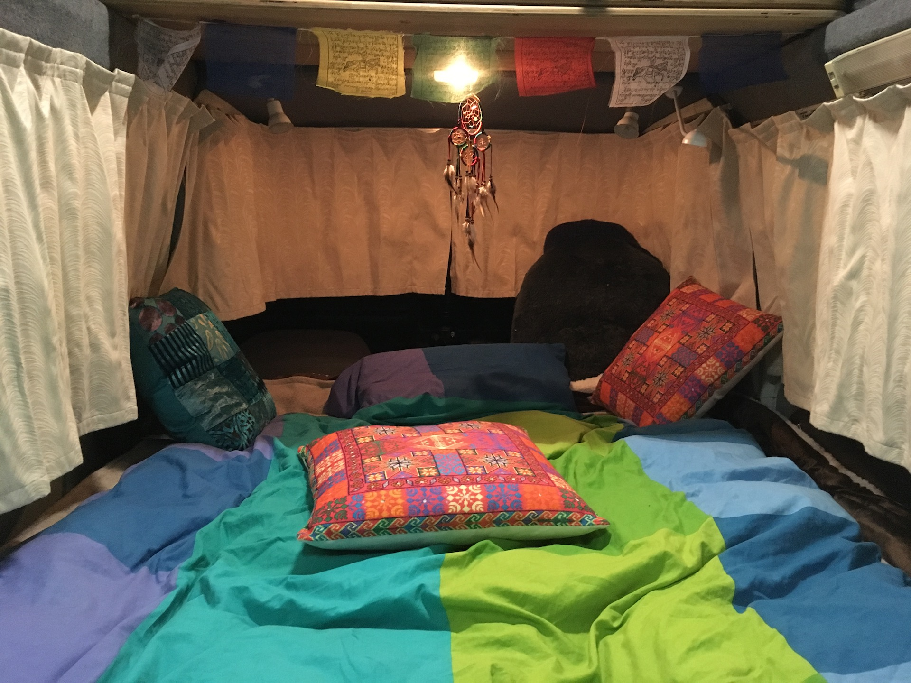
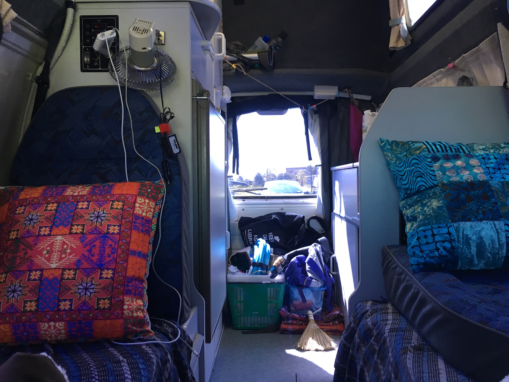
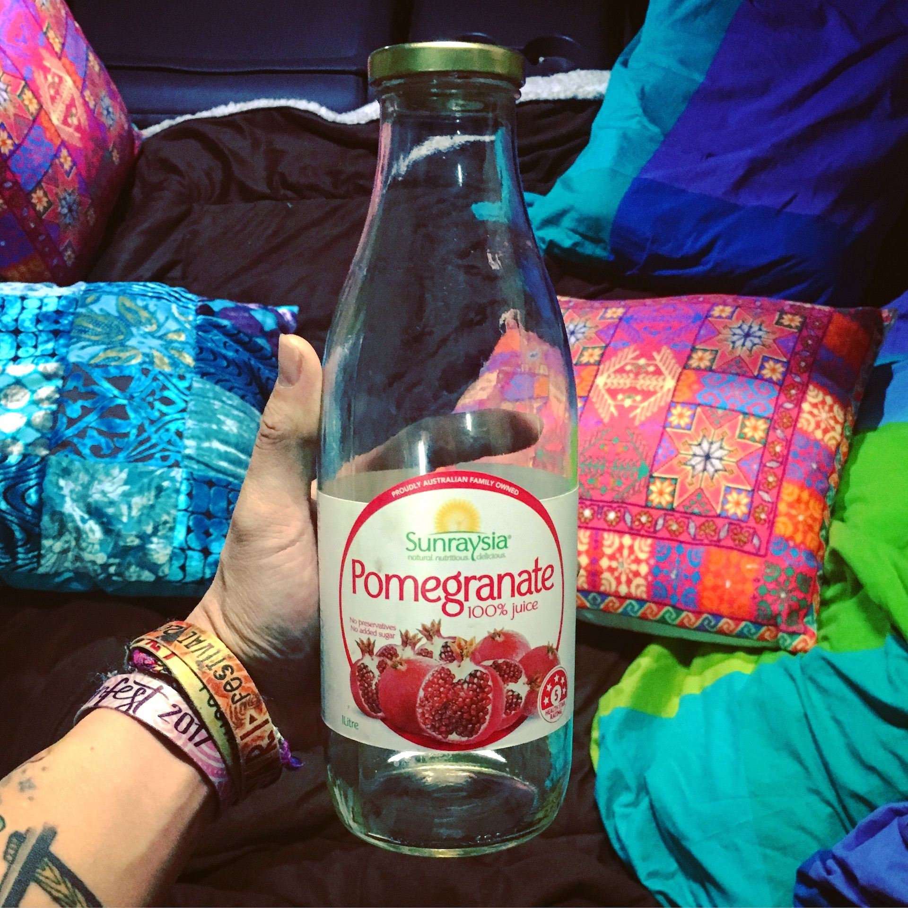

name: inverse layout: true class: center, middle, inverse --- # A PROGRAMMER'S GUIDE TO VAN LIFE <img src="assets/img/lambda.svg" alt="lambda" style="height: 3em;"> by Chen Zhao Email: [zzzcca12@gmail.com](mailto:zzzcca12@gmail.com?Subject=Hello%20from%20Ruby%20Melbourne) Twitter: [@lostylogic](https://twitter.com/lostylogic) Github: [@crunchysoul](https://github.com/crunchysoul) Instagram: [@funkycrunchy](https://www.instagram.com/funkycrunchy/) .footnote[Link to [source code](https://github.com/crunchysoul/talk-vanlife)] ??? 1. what 2. motivation 3. project (buzz, hello) 4. system check 5. buy a van 6. different vans 7. Emmy 8. move to van 9. belongings 10. day, night, kitchen 11. begin journey 12. plan, monitor and log 13. adapt inside, outside 14. get into van 15. buzzwords 16. hello world 17. home 18. pee 19. thank you vim jokes --- # What is it? ### In short: Living in a van fulltime ??? In short: Living in a van What do you think about people living in the van? FBI? CARTON? HIPPIE? BREAKING BAD? DRUGS? CREEPY? SUPERFLEX VEGAN/HAMP/YOGA/MEDATATION GURU? Well, You are all right, absolutely right. It's just not my van life. --- # What is my motivation? ### A Pragmatic move for an idealist ??? How I first got into this life? Last year while I studied my CS and Math degree in ANU. I made some crazy realisation: - friends who live in van - spend most of my time at uni, in a normal day, so home would become a special occasion for me - JOKE: of course, I was/am/will be for enternity single?? - I was paying about $200 rent per week - rational question surfaced in my gaintitc head ==> What is home? - Home is physical place, a location, with an unique address, that will be called upon when I need rest/cook/bath/practicing guitar/.../, so IT IS a Symbol, just like a symbol in Ruby... 2 mins ponding time for you all - If Home is merely a symbol that occupy my memory, what's the possibility of detach it. - TDD: Test Driven Development also works for this, --- # Imagine Van Life is a project ### think any technologies ??? - for this presentation, similarity - we all programmer, let's analog this to something, programming project - like ruby on rails, react, sinatra - as a creator, we want to lure people, what would we do? --- background-image: url(./assets/img/vanlifes.jpg) ??? - make it nice and easy, all the best - nice hippies, lots of beautiful women, nice scenery - super chill and cool - not bad, seems good --- # Awesome Buzzwords .red[*] ### .blue[Amazing Views, Freedom, Adventure, Inexpensive, Outdoorsy, Work anywhere, Minimally Easy, Rainbow, Unicorn...] <!-- ### .blue[Agile, Flexible, Easy Implementation, Customisable, Low cost, Unique, Rainbow] --> .red[*] what shows on home page ??? - copied from a online article, 11 benefits of vanlife - minimally easy - like every problems has been solved by this life style(like technos) --- # Hello world .red[*] .left[ ```ruby def van_life(life) life[:home], life[:van_feeling] = "Van", "Freedom and Awesomeness" return rainbow_n_unicorn end ``` ] .red[*] what shows on home page ??? - super easy hello world, right? - replace home address with just a van, - add infinity awesomeness to life - expecting rainbow and unicorn --- # Getting Started ??? - All good and dandy - curiosity, programmer, and cat, so let do it - Let's buy van and get cool - well, in reality, not really, just like programming, hello world seems so different to real implementation of project - let's step back - Do I really suit to this life? - Not really, here is the proper step, one should at least consider to do - your milage may vary --- # System requirement check .red[*] .left[ ```ruby def system_check?(person) has_children? has_pet? has_house? has_car? has_hobbies? has_initial_investment? regular_locations? relationship_status empolyment_status live_witout_(*)? sleep_pattern ... end ``` ] .red[*] before_action: think as many as possible ??? - This is by not means rule, - And I happen to be a single guy, who spend way to much time at things that should, programming - DO IT by your heart --- # Buying a van .red[*] .left[ ```ruby def buy_van(van) case van when "stealth van" return { pros: [ "cheap", "stealth" ], cons: [ "build", "can't stand", "lack *" ] } when "pop top van" return { pros: [ "relative stealth", "stand", "factory build" ], cons: [ "lack storage", "winter", "maintenance", "expensive" ] } when "high top van" return { pros: [ "stand", "factory build", "spacious", "equipment" ], cons: [ "can't hide", "tall", "maintenance", "expensive" ] } else search_a_unicorn end end ``` ] .red[*] need patience and luck to get the right one ??? - All my friends are going for the stealth - Price a fews thousand to the upper bound of your allowance - choose the one suit you, and need luck - two months ---  .left[ ```ruby stealth = { pros: [ "cheap", "stealth" ], cons: [ "build", "can't stand", "lack *" ] } ``` ] ---  .left[ ```ruby pop_top = { pros: [ "relative stealth", "stand", "factory build" ], cons: [ "lack storage", "winter", "maintenance", "expensive" ] } ``` ] ---  .left[ ```ruby high_top = { pros: [ "stand", "factory build", "spacious", "equipment" ], cons: [ "can't hide", "tall", "maintenance", "expensive" ] } ``` ] ---  ## *"Emmy Lou"* ??? two months later - old lady who passed away - old but very clean and reliable --- # *"Emmy Lou"* 2000 Toyota Hiace Hightop, with 2.4 Petrol, auto, 300+ kms ### Equipment: .left[ ```ruby equipments = { power: [ "secondary deep circle battery 100Ah", "4 kg gas cylinder", "roof solar panel" ], kitchen: [ "60L water tank", "water sink with electrical water pump", "3 ways 90L fridge", "two burnner stoves", "microwave oven (removed)" ], entertaining: [ "20inch Tv (removed)" ], living: [ "convertable sofa/double bed", "upper bunkbed", "convertable table"], extra: [ "shower drop at rear", "storages", "mosquito net", "server lights", "radio", "electricity moniter"] } ``` ] ??? - very lucky, most of equip are there - remove - first time driving back to canberra from sydney - night time, moon - I was driving my car, also my home, that feeling, I may remember forever - feels your can concuqure everything --- # Move to van .left[ ```ruby def move(apartment, van) keeps = [] disappears = [] def cleanup(home) home.map do |thing| thing.essential? ? (keeps << thing) : ( disappears << thing) end end cleanup(appartment) disappears.give_or_throw keeps.move_to(van) end ``` ] ??? homebrew: brew cleanup - Back to canberra - With excitment, began to move to van - should be easy right - NOt, spend total three whole days - Another holy moment, realisation - I have soo many stuff that never used - all I need is just really small protion of what I owned --- # Move to van .left[ ```ruby belongings == "8 storage boxes of nonsense" keeps == "3 stroage boxes of #{essentials}" essentials = { clothes: "2 for each different social events", kitchen_utensils: "maximal 2 for each kind, all mini sized", guitars, climbing_gears, gadget: [ "laptop", "headphone"], beddings: "one set", toiletaries, medicines, tools } ``` ] ??? 3 out 8, ---  ## New home at day ??? explantion about the setup - hippie setup so dont need to explain too much - add color - cool? - power - dc not ac ---  ## New home at night ??? - double bed - bigger than any bed in past four years - level ground is important ---  ## New home kitchen ??? - broom - water hose - Salt lamp for absorb humidity --- # The beginning of a new journey .red[*] .left[ ```ruby def maintain_van_life(issues, features, performance) while live_van_life do issues.resolve features.add performance.optimise end end ``` ] .red[*] Recursive experiences to resolve issues, add new features, optimise performance ??? Remember the time you know have to nav in vim - same, but you have no idea what is waiting ahead - three example: - fridge, rooftop - raining night broken down - bed balancing --- # How to survive van life? ### Planning and Adapting ??? - two things that are really important --- # Planning .left[ ```ruby def make_plan important_locations = { water_supply: [ "friends' place", "old apartment", "camping ground", "tourist center", "university", "restaurants", "workplaces", "gym", "anywhere I can get" ], toilets: [ "gym", "library", "24hours restaurant", "petrol stations" ], gas_cylinder: "Bunnings", fuel: "petrol station", late_night_work: [ "university library", "Pancake Parlours (wifi: lovely57)", ], park_locations: [...], ... } end ``` ] ??? supply - location - mail - toilet - shower - park --- # Planning .red[*] ### .violet[Always plan ahead everyday] where heading to, important_locations, where to park for the night .red[*] do what flight/ship Captains do ??? - without plan, hours can be wasted on driver seat --- # Planning .red[*] ### .violet[Keep monitoring and loging] vehicle condition, fuel level, electricity level, water level, gas level .red[*] do what flight/ship Captains do ??? gas cylinder - fridege - elec --- # Adapting .red[*] ### .violet[Stay alert to inside of van] things and equipment can and will breakdown, and always at the most inconvenient time .red[*] do what ship mechanics do --- # Adapting .red[*] ### .violet[Stay alert to outside of van] environment and surrounding, human interactions, inform others openly .red[*] do what securities do --- # Get into van life .left[ ```ruby def van_life_steps system_check buy_van move(apartment, van) maintain_van_life make_plan be_adaptive end ``` ] --- # Buzzwords revision .red[*] ### .blue[Agile, Environment friendly, Essence focused, Open to others, Cherish, Adaptable, Great challenge, Experiences, Insight, Courage ] .red[*] with experiences as project creator, maintainer and user ??? - how to be agile, think fast, and move fast, as home the last safety concept is gone, you are out there all the time --- # Hello World revision .red[*] .left[ ```ruby def van_life(life) life[:home] = "Van" life.update(life) do |key, value| live_with_van(value) end return life end ``` ] .red[*] not as simple as replacing home address ??? It's not as simple as change, is about add this attribute to everything in life --- # As a Rubist ### .red[:home] is not just a Symbol nor a fixed address in memory or physical, names of where and how we live don't matter, the value behinded .red[:home] matter, make it meaningful. ```ruby life = { ... home: "where the ❤️ is" ...} ``` --- ## One more thing...  Answer: #peejar --- name: last-page template: inverse # That's all friends, thank you! .red[*] ## .violet[Q & A] by Chen Zhao Email: [zzzcca12@gmail.com](zzzcca12@gmail.com) Twitter: [@lostylogic](https://twitter.com/lostylogic) Github: [@crunchysoul](https://github.com/crunchysoul) Instagram: [@funkycrunchy](https://www.instagram.com/funkycrunchy/) .red[*] now, all of you have become a contributor to my vanlife project, thank you!